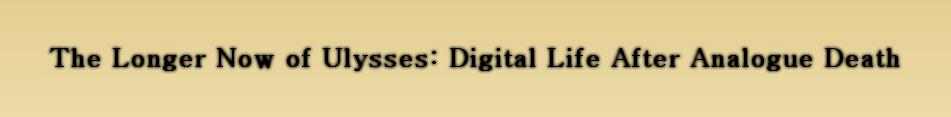
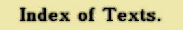

Just what is this page?
“The Long Now of Ulysses” exhibit at the University of Victoria's McPherson Library takes the modernist fascination with time, space and form as its cornerstone, using James Joyce’s modernist masterpiece Ulysses as a springboard for a presentation using many forms of media. It will introduce visitors to modernism, as well as the stylistic dimensions of the novel. Using 18 alogrithmically selected extracts from the novel, This exhibit extends the 'long now' across media, times, and places to suggest ways in which we might still treat Ulysses as a springboard into the cultures of modernity and postmodernity. Extracts taken from James Joyce. Ulysses. Paris: Shakespeare and Company. 1922.Print.
Because the sections selected for our exhibit have been removed from their original literary context, and inserted into a new algorithmic one, they have taken on a fundamentally new form that must be studied as a unique “text”, representative specifically of the “Long now of Ulysses.” Thus, I have used this webspace to present each extract as a separate page connected to a main hub, and used XML to mark-up each piece according to pre-defined parameters, such as paragraph structure, vowel density, and word-type. These texts have been also been formatted to closely approximate their appearance in the book; it is my hope that these extracts will live long past the physical exhibit.
Below you will find links to each web-viewable, TEI complient XML extract, arranged according to book chapter, from left to right; all extracts are best viewed in Firefox.
Created by David Carlton (2013) in collaboration with ENGL 507 and ENGL 560 and The University of Victoria Library
